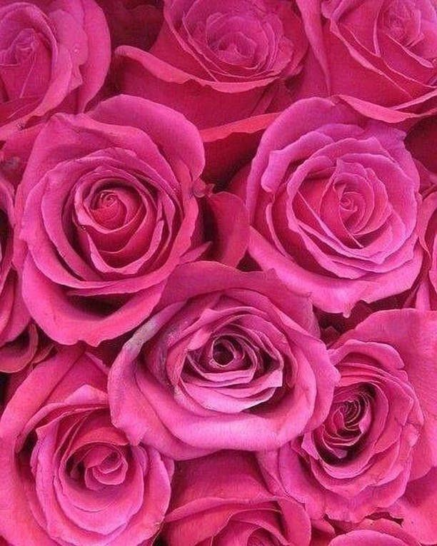
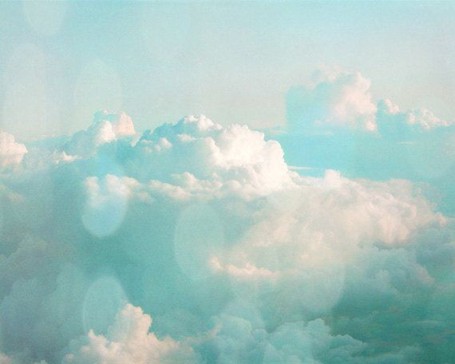
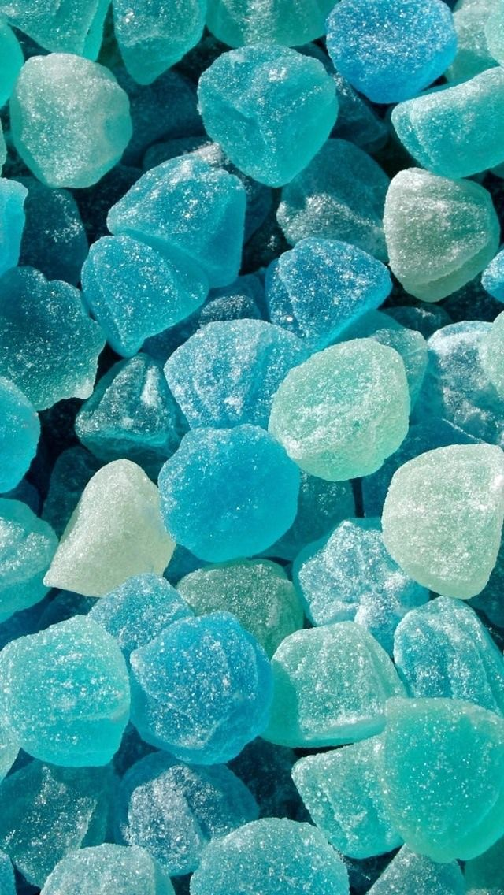

Colors
Cerulean
Cerulean represents the "sky" or "heavens", or sometimes the ocean. The name "Cerulean blue" comes from Latin caeruleus = dark blue caelum which in turn probably derives from caelulum, diminutive of caelum, "heaven, sky". you can discover 5 synonyms, antonyms, idiomatic expressions, and related words for cerulean, like: lazuline, azure, sky-blue, bright blue and sapphire. Cerulean blue is a bright semi-transparent greenish-blue and is useful as a cool blue on the palette. It first appears to be a strong colour but as it is mixed with other colours it is much weaker in strength. It is an artificial mineral pigment, made by roasting together cobalt sulphate, silica and tin salts.
Fuchsia rose
Cerulean represents the "sky" or "heavens", or sometimes the ocean. The name "Cerulean blue" comes from Latin caeruleus = dark blue caelum which in turn probably derives from caelulum, diminutive of caelum, "heaven, sky". you can discover 5 synonyms, antonyms, idiomatic expressions, and related words for cerulean, like: lazuline, azure, sky-blue, bright blue and sapphire. Cerulean blue is a bright semi-transparent greenish-blue and is useful as a cool blue on the palette. It first appears to be a strong colour but as it is mixed with other colours it is much weaker in strength. It is an artificial mineral pigment, made by roasting together cobalt sulphate, silica and tin salts.
True red
Cerulean represents the "sky" or "heavens", or sometimes the ocean. The name "Cerulean blue" comes from Latin caeruleus = dark blue caelum which in turn probably derives from caelulum, diminutive of caelum, "heaven, sky". you can discover 5 synonyms, antonyms, idiomatic expressions, and related words for cerulean, like: lazuline, azure, sky-blue, bright blue and sapphire. Cerulean blue is a bright semi-transparent greenish-blue and is useful as a cool blue on the palette. It first appears to be a strong colour but as it is mixed with other colours it is much weaker in strength. It is an artificial mineral pigment, made by roasting together cobalt sulphate, silica and tin salts.
Aqua sky
Cerulean represents the "sky" or "heavens", or sometimes the ocean. The name "Cerulean blue" comes from Latin caeruleus = dark blue caelum which in turn probably derives from caelulum, diminutive of caelum, "heaven, sky". you can discover 5 synonyms, antonyms, idiomatic expressions, and related words for cerulean, like: lazuline, azure, sky-blue, bright blue and sapphire. Cerulean blue is a bright semi-transparent greenish-blue and is useful as a cool blue on the palette. It first appears to be a strong colour but as it is mixed with other colours it is much weaker in strength. It is an artificial mineral pigment, made by roasting together cobalt sulphate, silica and tin salts.
Tigerlily
Cerulean represents the "sky" or "heavens", or sometimes the ocean. The name "Cerulean blue" comes from Latin caeruleus = dark blue caelum which in turn probably derives from caelulum, diminutive of caelum, "heaven, sky". you can discover 5 synonyms, antonyms, idiomatic expressions, and related words for cerulean, like: lazuline, azure, sky-blue, bright blue and sapphire. Cerulean blue is a bright semi-transparent greenish-blue and is useful as a cool blue on the palette. It first appears to be a strong colour but as it is mixed with other colours it is much weaker in strength. It is an artificial mineral pigment, made by roasting together cobalt sulphate, silica and tin salts.
Blue turquoise
Cerulean represents the "sky" or "heavens", or sometimes the ocean. The name "Cerulean blue" comes from Latin caeruleus = dark blue caelum which in turn probably derives from caelulum, diminutive of caelum, "heaven, sky". you can discover 5 synonyms, antonyms, idiomatic expressions, and related words for cerulean, like: lazuline, azure, sky-blue, bright blue and sapphire. Cerulean blue is a bright semi-transparent greenish-blue and is useful as a cool blue on the palette. It first appears to be a strong colour but as it is mixed with other colours it is much weaker in strength. It is an artificial mineral pigment, made by roasting together cobalt sulphate, silica and tin salts.
